Import audio, assign it to any of 64 pads, sequence beats and notes, play the synthesizer, arrange clips, mix eight tracks, record your microphone, and export WAV audio.
Save stores the project and audio in this browser. “Project + audio” downloads a portable file that includes the sounds. Keep a downloaded copy before clearing browser data. Browser portable bundles open in this web studio. “Desktop JSON” exports project metadata for the native app; audio must be relinked there, and browser master effects need to be recreated. Native desktop projects reference local files: import those sounds here, select an imported replacement in the library, then use the missing pad’s options to relink all references.
Shortcuts: Space starts/stops playback; 1–8 trigger the current pad bank; Ctrl/Cmd+S saves; Ctrl/Cmd+Z undoes. Shortcuts pause while typing in a field. Stop releases all voices.
Desktop-only: plugin hosting, stem separation, pitch correction, audio-device routing, and native DSP effects that are not present in the browser mixer. Native project settings are retained, but these processors are not reproduced by Web Audio.